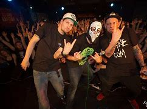

Sodoma Gomora je česká horrorcorová skupina.
Kapela je složena ze dvou umělců – Řezníka a DeSada. Nejprve rozjížděli kariéru sólově, DeSade pod jménem SWD. V roce 2008, po několika předchozích spolupracích, se zrodila kapela Sodoma Gomora, jejíž hudební tvorba se dříve soustředila v území, kde oba jmenovaní prožili mládí, tedy ve Šluknovském výběžku. Kvůli studijním a pracovním důvodům se ale později přestěhovali do Prahy. Koncertují napříč republikou Českou republikou, ale nevynechali ani koncerty na Slovensku nebo Francii.